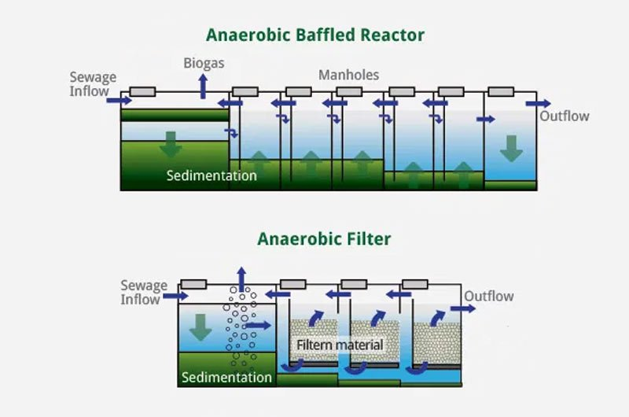

METHODS OF RECYCLING WATER
Physical Water Treatment
This treatment uses physical methods to clean wastewater. Screening, sedimentation and skimming are popular examples of these and are primarily used to remove the solids. There is no use of chemicals involved here.
The most common and effective ways of physically treating wastewater is sedimentation. It makes the heavy insoluble particles settle at the bottom while clean water is skimmed out.
Another effective physical treatment is aeration. This process circulates air through the water to add oxygen to it.
Water reuse can be defined as planned or unplanned. Unplanned water reuse refers to situations in which a source of water is substantially composed of previously-used water. A common example of unplanned water reuse occurs when communities draw their water supplies from rivers, such as the Colorado River and the Mississippi River, that receive treated wastewater discharges from communities upstream
Planned water reuse refers to water systems designed with the goal of beneficially reusing a recycled water supply. Often, communities will seek to optimize their overall water use by reusing water to the extent possible within the community, before the water is reintroduced to the environment. Examples of planned reuse include agricultural and landscape irrigation, industrial process water, potable water supplies, and groundwater supply management.
Biological Water Treatment
biological processes are used to disintegrate the organic matter present in wastewater. For instance, soap, oils and food. Certain microorganisms are responsible for metabolizing organic matter in the wastewater. Biological water treatments are of 3 types:
Aerobic processes: Bacteria are introduced into the water. They decompose the organic waste into carbon dioxide which is then used by plants.
Anaerobic processes: Here, the organic waste is fermented at a specific temperature without the use of oxygen.
Composting: Here, sawdust or other carbon sources are mixed with the wastewater in order to treat it.

Chemical Water Treatment
The name is self-explanatory. This type of treatment involves the introduction to water so that it can be purified. A commonly used chemical is Chlorine. It kills bacteria which contaminate the water. In certain cases, even ozone is added to purify water. These chemicals prevent the bacteria from reproducing in water, thus making the water pure.
Sludge Treatment
Sludge treatment is essentially a solid-liquid separation process. An example of this is sewage water. This is achieved by specialized solid-liquid separation devices like centrifuges.
Wastewater has caused hazards for our surface waters like oceans, seas, rivers, etc by contaminating them beyond measure. If not treated today, the quantity of wastewater will only keep on increasing and causing further harm to our ecosystem. However, the methods of wastewater recycling discussed above are industrial processes which a common man may not be able to achieve.